Los estudiantes universitarios con mucha carga confían en su memoria para recordar entregas y compromisos, y cuando llega el cansancio esa memoria falla: se olvidan tareas, pierden puntos y viven con estrés constante.
Para quiénEstudiantes universitarios que combinan cursada, entregas y responsabilidades personales
Combinamos una encuesta para medir qué tan extendido es el problema y entrevistas en profundidad para entender por qué ocurre.
Métodos y participantes
54respuestas válidas a la encuesta. 74% tiene entre 18 y 25 años; 63% solo estudia y 24% estudia y trabaja.
5entrevistas en profundidad: estudiante de Medicina, estudiante, tesista con apoyo familiar, estudiante universitario y una repostera emprendedora.
10preguntas de encuesta y 12 preguntas abiertas de entrevista sobre carga, olvidos, métodos y bienestar.
Cómo analizamos los datos: normalizamos las transcripciones (con ayuda de IA, marcando los segmentos dudosos), unificamos la encuesta en una sola planilla, hicimos codificación inductiva manual de cada entrevista y agrupamos los códigos en un diagrama de afinidad. Después le pedimos a una IA el mismo agrupamiento para contrastarlo con el nuestro. Las respuestas atípicas de la encuesta (por ejemplo, «Ibuprofeno» como medio para recordar compromisos) se dejaron visibles y señaladas en lugar de borrarlas sin registro.
Lo que mostró la encuesta
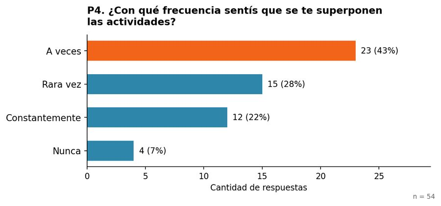
P4. ¿Con qué frecuencia se te superponen las actividades? 65% dice «a veces» o «constantemente».
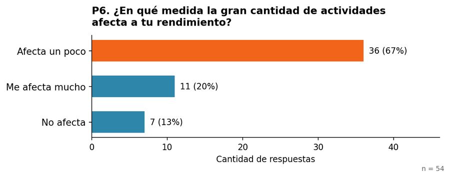
P6. ¿En qué medida la cantidad de actividades afecta tu rendimiento? 87% dice que lo afecta en algún grado.
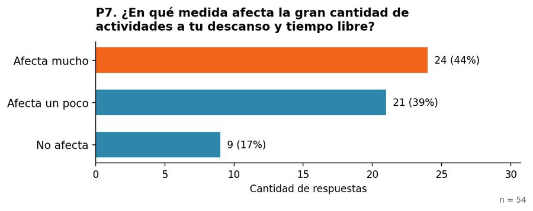
P7. ¿Afecta tu descanso y tiempo libre? 44% dice que lo afecta mucho.
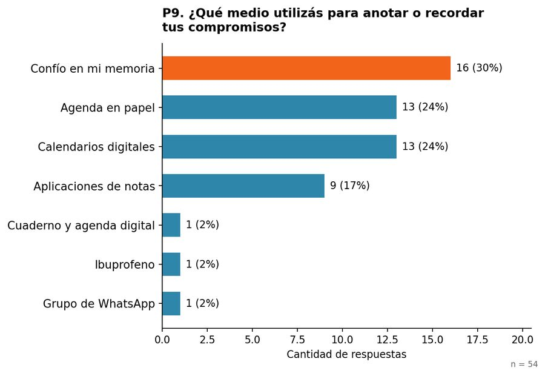
P9. ¿Qué medio usás para recordar tus compromisos? El método más elegido es la memoria (30%).
Lo que dijeron en las entrevistas
«Como si tratara de beber de una catarata con una pajita.»Entrevistado 1, estudiante de Medicina, describiendo su semana
«Una vez me olvidé de entregar un trabajo… Tuve que entregarlo tarde y me bajaron puntos.»Entrevistado 2, estudiante
«Creo que me ayudaría tener todo en un solo lugar, porque ahora tengo cosas anotadas en distintos lados.»Entrevistado 2, estudiante
Diagrama de afinidad: temas
Temas del diagrama de afinidad, contrastados con el agrupamiento hecho con IA
Tema
Participantes
Evidencia en contra
Métodos de organización informales, basados en la memoria
Entrevistados 1, 2 y 4
—
Deterioro del bienestar físico, emocional y social
1, 2, 3 y 4
Entrevistada 5: «No me afecta»
Consecuencias de los olvidos (académicas, familiares, sociales)
1, 2, 3 y 4
Entrevistada 5: «Nunca me olvidé todavía»
Picos de sobrecarga en parciales, cierres de semestre o temporadas de pedidos
1, 2, 4 y 5
Entrevistada 3 la atribuye a imprevistos, no a épocas fijas
Fricción por herramientas físicas o dispersas
2 y 5
Evidencia limitada (2 participantes)
Postergar o abandonar tareas ante la saturación
1, 2 y 4
Entrevistada 3 reorganiza en vez de abandonar
Hallazgos
Hallazgos con su base numérica
N.º
Hallazgo
Fuente
H1
4 de 5 entrevistados sienten estrés, agotamiento físico o cansancio emocional por la acumulación de actividades.
Entrevistas
H2
4 de 5 identifican picos de sobrecarga en períodos concretos (parciales, cierres de semestre, temporadas de pedidos).
Entrevistas
H3
3 de 5 se apoyan solo en la memoria o la improvisación, sin una herramienta de registro.
Entrevistas
H4
3 de 5 sufrieron consecuencias por olvidos: pérdida de puntos, reclamos de compañeros o alarma familiar.
Entrevistas
H5
3 de 5 postergan, desorganizan o abandonan tareas cuando se saturan.
Entrevistas
H6
65% de los encuestados (35 de 54) siente que sus actividades se superponen a veces o constantemente.
Encuesta
H7
87% de los encuestados (47 de 54) dice que la cantidad de actividades afecta su rendimiento.
Encuesta
Insights
Insight 1 (eje estudiantil). Confiar solo en la memoria para gestionar muchas responsabilidades falla cuando se acumula el agotamiento físico, y los olvidos se convierten en sanciones y conflictos con el entorno. Los olvidos no son falta de voluntad: son el resultado de un colapso mental por cansancio. Sale de H1, H3 y H4.
Insight 2 (eje emprendimiento). Las herramientas físicas (notas adhesivas, papel) no se adaptan a los cambios: cada pedido que cambia obliga a reescribir todo, con pérdida de tiempo y desgaste. Sale del tema de afinidad «fricción por herramientas dispersas» (entrevistada 5).
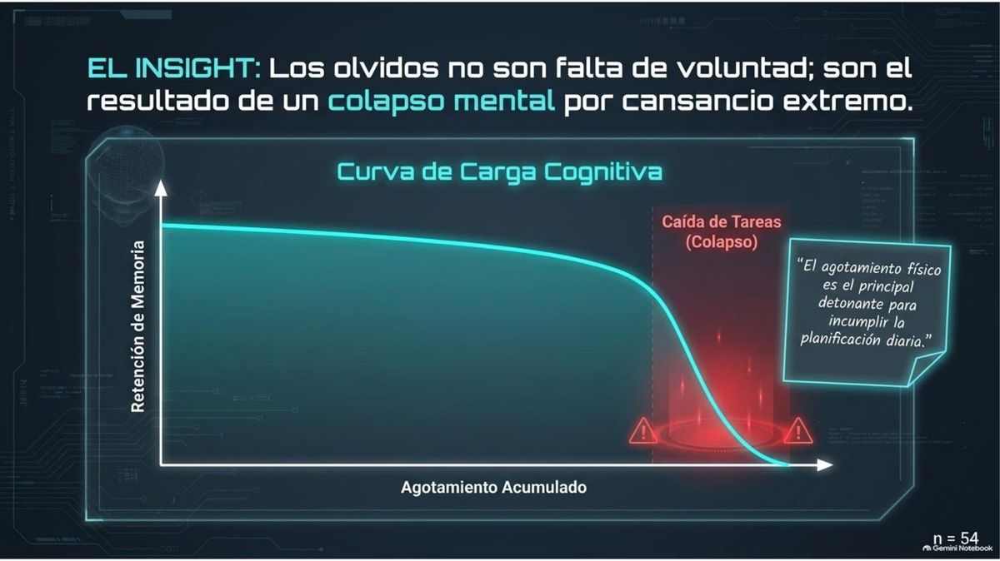
Así presentamos el insight 1: la memoria aguanta hasta que el agotamiento acumulado la hace colapsar.
Autochequeo de sesgos
Confirmación: esperábamos encontrar que «sin herramientas, hay olvidos». La investigación agregó algo que no habíamos previsto: el agotamiento físico es el verdadero detonante de los olvidos.
Selección: analizamos las 54 encuestas y las 5 entrevistas completas, incluidas las respuestas que contradicen la tendencia (entrevistada 5).
Sobregeneralización: todos los hallazgos llevan su proporción exacta («3 de 5», «23 de 54»), sin «todos» ni «la mayoría».
Convertimos los hallazgos en dos personas, un punto de vista y una pregunta guía. Cada requisito se puede rastrear hasta el hallazgo del que sale.
Personas
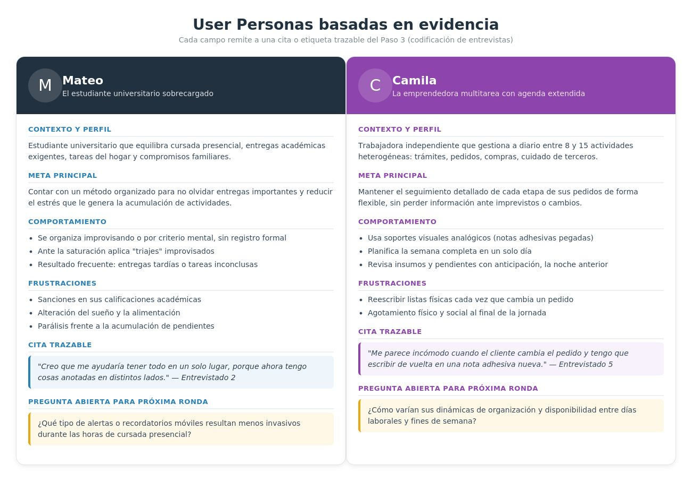
Mateo y Camila. Cada campo de la ficha remite a una cita o código de las entrevistas.
Decisión: el producto se enfoca en Mateo. El perfil estudiantil es el que se repite con más fuerza: 4 de los 5 entrevistados son estudiantes y el 87% de la encuesta tiene la carga afectando su rendimiento. Camila (insight 2) quedó como un segundo perfil: sus necesidades de editar sin reescribir están cubiertas por la edición de tareas, pero el seguimiento por etapas de pedidos se posterga.
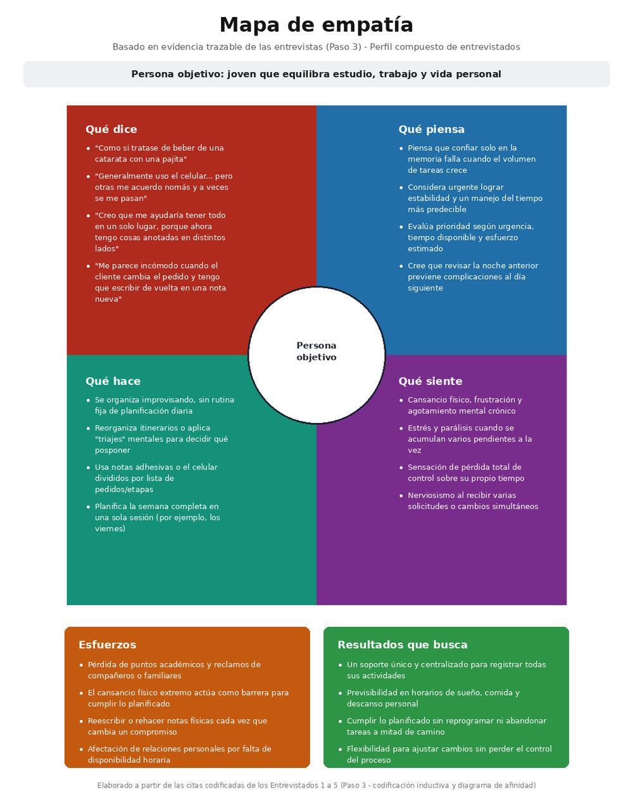
Mapa de empatía construido con las citas codificadas de los 5 entrevistados.
Punto de vista (POV)
Borrador: Mateo, un estudiante universitario, necesita una forma de acordarse de sus trabajos y tareas porque cuando confía en su memoria se olvida de las entregas y termina rindiendo mal o estresándose.
Versión refinada: Mateo, un estudiante universitario con alta exigencia académica y personal, necesita centrar y priorizar de forma clara sus actividades porque depende de su memoria, y bajo agotamiento físico esto hace que se olvide de actividades, se desorganice y viva con estrés constante.
Pregunta «¿Cómo podríamos…?»
¿Cómo podríamos ayudar a Mateo a visualizar y organizar sus tareas por prioridad para que pueda tomar decisiones anticipadas sobre su tiempo sin depender de su memoria ni llegar al cansancio mental?
El momento crítico es «durante»: ejecuta las tareas a ritmo acelerado, aplica un triaje mental y ahí aparecen los olvidos. Las oportunidades de esa etapa (alertas preventivas, recordatorios) guiaron los requisitos. Tocá la imagen para verla en tamaño completo.
Historias de usuario y requisitos, con su origen
Trazabilidad: de los hallazgos a las historias y los requisitos funcionales
Hallazgo
Historia de usuario
Requisitos funcionales
H2 · picos de sobrecarga
1. Como estudiante, quiero anticipar los períodos en que mis obligaciones se van a acumular, para repartir mi esfuerzo antes del pico.
RF1.1 Mostrar las fechas con más compromisos que el promedio. RF1.2 Avisar con anticipación configurable antes de un período de alta carga.
H3, H4 · memoria y olvidos con consecuencias
2. Como estudiante, quiero tener certeza de que ningún compromiso importante se me va a pasar, para que mis olvidos no afecten mis notas ni a otras personas.
RF2.1 Recordatorio antes de cada fecha límite. RF2.2 Marcar un compromiso como importante con un recordatorio distinto.
H5 · postergar o abandonar
3. Como estudiante, quiero decidir con claridad qué tareas puedo postergar sin consecuencias graves, para no perder el control.
RF3.1 Ordenar las tareas por un criterio de prioridad. RF3.2 Reprogramar una tarea sin borrar su registro original.
Insight 2 · herramientas rígidas
4. Como emprendedora, quiero adaptarme rápido cuando un pedido cambia de último momento, sin rehacer todo.
RF4.1 Editar un registro sin crear uno nuevo. RF4.2 Conservar el historial de cambios.
H1, H6, H7 · estrés y rendimiento
5. Como estudiante, quiero sentir que tengo mi carga bajo control en las semanas más pesadas, para reducir el desgaste.
RF5.1 Resumen cuantificado de pendientes por día o semana. RF5.2 Ver en cualquier momento cuántas tareas completé y cuántas faltan.
Requisitos no funcionales destacados
Pocos pasos para registrar, porque el usuario anota en momentos de alta carga y entre clases (sale de H1 y del mapa de viaje).
Funciona con conexión intermitente, porque los entrevistados se trasladan mucho durante el día (entrevistada 3).
Para usuarios sin experiencia en herramientas de gestión: el 30% hoy confía solo en su memoria (P9).
Objetivo de usabilidad: al menos el 80% de los usuarios consulta sus pendientes sin errores de navegación.
Partimos de la pregunta «¿Cómo podríamos…?», generamos ideas sin juzgar, exploramos variantes con Crazy 8s y elegimos con los seis principios de diseño de interacción.
Lluvia de ideas: las ideas priorizadas
Ideas priorizadas para la pregunta de Mateo
Idea
Historia o requisito
Por qué la elegimos
Vista semanal que agrupa los compromisos por día y resalta los días con carga muy por encima del promedio
Historia 1 → RF1.1, RF1.2
Hace visible el pico de carga antes de que ocurra, sin que Mateo lo calcule mentalmente.
Registrar un compromiso en un solo paso (nombre + fecha) y completar el detalle después
Historia 2 → RF2.1
Ataca la barrera que hoy hace que Mateo no anote nada: la fricción de registrar cuando está cansado.
Botón «reprogramar» que mueve la tarea sin borrar el registro y muestra cuántas veces se movió
Historia 3 → RF3.2
Convierte el «abandono silencioso» en una decisión visible y sin culpa.
Para Camila también priorizamos la edición directa con historial, los pedidos divididos en etapas y un resumen del día. Se postergaron al enfocar el producto en Mateo.
Crazy 8s
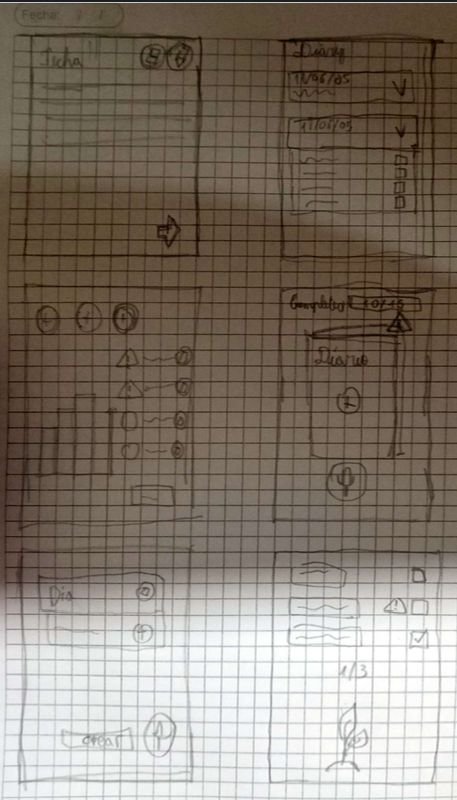
Crazy 8s: ocho variantes en ocho minutos sobre cómo mostrar y priorizar las tareas del día.
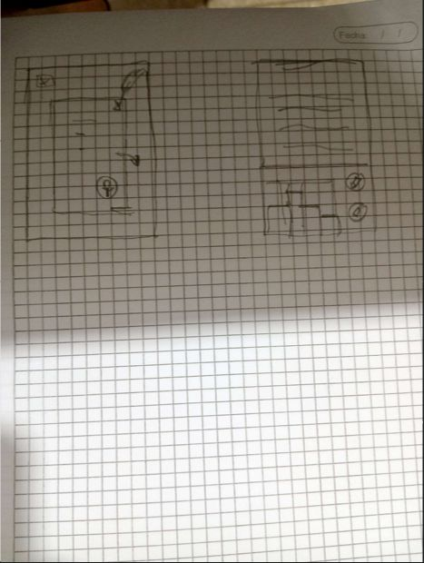
Variantes con orden por urgencia (V4) e íconos de estado (V7).
Cómo elegimos: curación con los seis principios
Los tres bocetos más prometedores evaluados con los principios de diseño de interacción
Boceto
Manipulación directa
Affordance
Retroalimentación
Restricciones
Significante
Mapeo
V1 · Lista simple
Cumple
No queda claro
Ignora
No queda claro
Cumple
No queda claro (sin criterio de orden visible)
V4 · Orden por urgencia
Cumple
No queda claro
Ignora
Cumple
Cumple fuerte
Cumple (arriba = más urgente)
V7 · Estado con ícono
Cumple
No queda claro
Ignora
No queda claro
Cumple con matiz (código de color a aprender)
No queda claro
Dirección elegida: combinar el orden por urgencia de V4 (lo más urgente arriba) con los íconos de estado de V7 (pendiente, en curso, resuelto). Cumple mejor el principio de mapeo: la posición comunica la urgencia y el ícono comunica el estado, sin que se pisen. Resuelve las historias 3 y 5.
Lo que aprendimos de la curación: ninguno de los tres bocetos resolvía la retroalimentación (qué pasa al tocar algo). Por eso agregamos una pantalla de confirmación al prototipo en papel.
El prototipo pasó por tres fidelidades. En cada paso explicamos qué cambió y qué lo motivó.
Papel
Wireframes
Alta fidelidad
Etapa 1 · Prototipo en papel
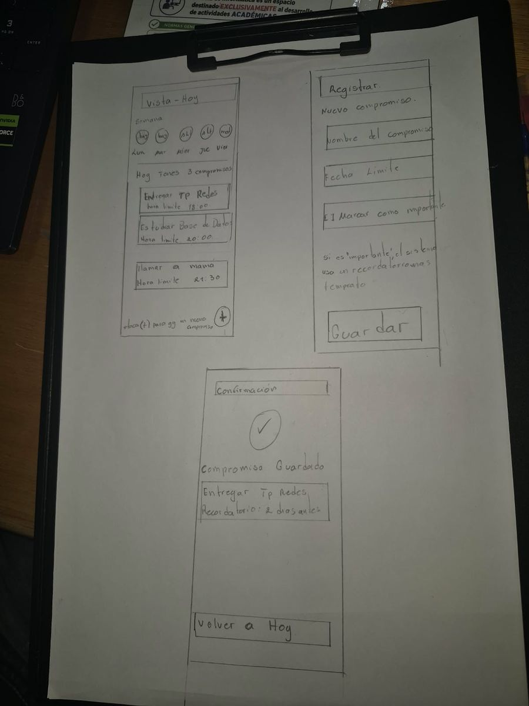
Tres pantallas: Vista Hoy, Registrar compromiso y Confirmación.
Probamos un solo flujo: ver lo urgente del día → registrar un compromiso → ver la confirmación. La pantalla de confirmación existe justamente porque la curación mostró que nos faltaba retroalimentación.
Al registrar se puede marcar un compromiso como importante, lo que activa un recordatorio con más anticipación (RF2.2).
Lo revisamos con la pregunta «¿alguien que no participó podría recorrerlo sin explicación?». Concluimos que sí, porque la secuencia «tocar lo urgente → marcar listo → ver confirmación» se explica sola.
Etapa 2 · Wireframes
Pasamos de 3 pantallas a un flujo navegable por tareas, en escala de grises. Los cambios respecto del papel:
Se sumó el Calendario con indicadores de carga por día (● pendientes, ○ completadas), para cumplir la historia 1 (anticipar los picos).
Se sumó la creación de tareas con IA: Mateo escribe con sus palabras y la IA propone fecha, prioridad y aviso. Responde a que registrar tiene que costar poco cuando está cansado.
El aviso pasó a ser configurable (1 día antes, 2 días antes, a elección), en lugar de una casilla de «importante» (RF1.2 y RF2.1).
La dificultad pasó a ser un dato visible de cada tarea para ayudar a decidir qué postergar (historia 3).
La confirmación dejó de ser una pantalla aparte y pasó a ser un mensaje «Tarea guardada» arriba de Hoy, para no cortar el flujo.
Wireframes de la tarea «anotar una tarea pendiente»: Hoy → Nueva tarea → Aviso → Hoy con «Tarea guardada».
Etapa 3 · Alta fidelidad, tarea por tarea
Las pantallas se generaron con IA a partir de los wireframes corregidos, con un prompt por tarea que dictaba colores, tipografía, espaciado, botones y accesibilidad. La IA propuso; nosotros revisamos cada pantalla contra el sistema de diseño.
Tarea 1 · Anotar una tarea pendiente con su fecha y qué tan difícil es
Wireframe
Alta fidelidad
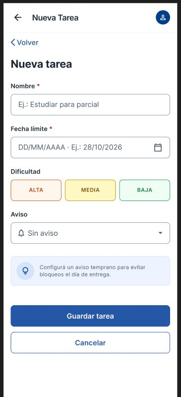
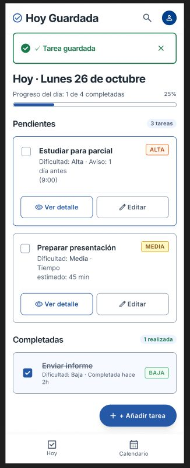
Qué cambió y por qué: en la pantalla Hoy, el botón «Añadir tarea» dejó de ser flotante y quedó debajo de la lista, porque en la prueba tapaba la última tarea (problema 5). El mensaje «Tarea guardada» se muestra arriba, en verde con ícono, junto a la barra de progreso, para que el cambio se note aunque el usuario mire abajo (problema 4).
Tarea 2 · Saber qué tengo que hacer primero hoy
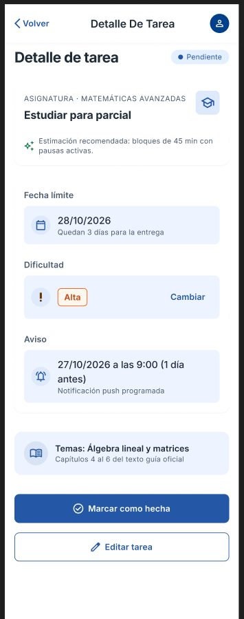
Qué cambió y por qué: el Calendario conserva la leyenda de puntos, que en la prueba se entendió enseguida (facilidad 6,5 de 7). Se agregó una pantalla de Detalle con «Marcar como hecha» como acción principal, para que completar una tarea no dependa de acertarle a un checkbox chico (problema 2).
Tarea 3 · Recibir un aviso cuando se acerca la fecha de una tarea
Wireframe
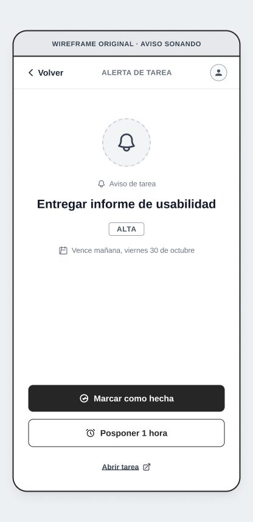
Alta fidelidad
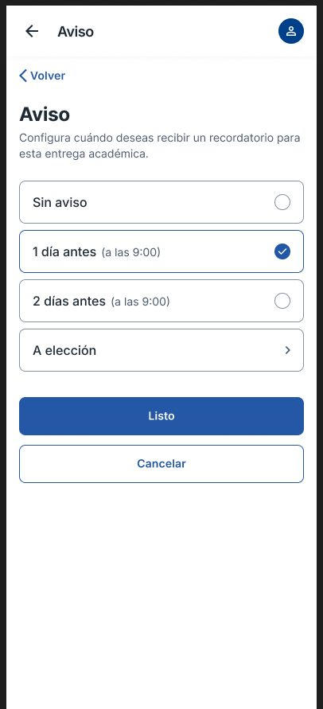
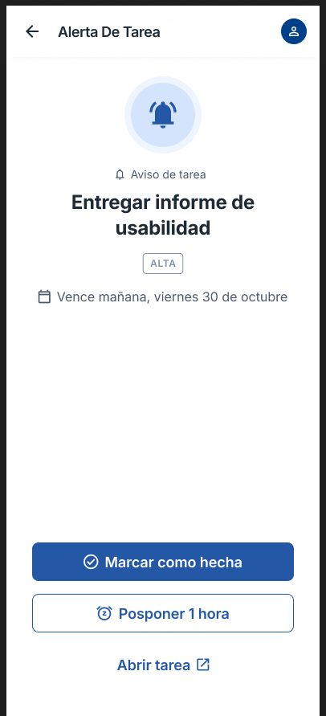
Qué cambió y por qué: «A elección» ahora es una fila con flecha, igual que un elemento de navegación, porque en la prueba 2 de 3 personas no notaron que se podía tocar (problema 3). El aviso ofrece «Posponer 1 hora» además de marcar como hecha, para que postergar sea una decisión visible (historia 3).
Tarea 4 · Cambiar la fecha o la dificultad de una tarea ya cargada
Wireframe
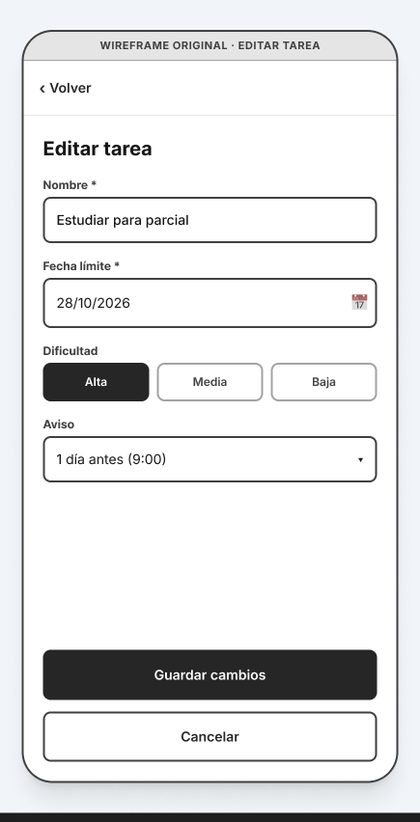
Alta fidelidad
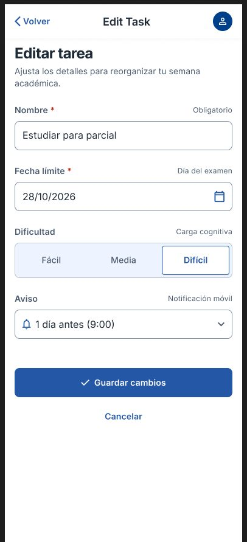
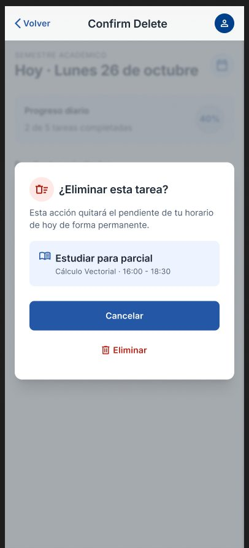
Qué cambió y por qué: la dificultad pasó de Alta/Media/Baja a Fácil/Media/Difícil, porque Alta/Media/Baja era también la escala de la prioridad y se confundían. Eliminar pide confirmación, con «Cancelar» como acción principal, para prevenir errores (heurística 5).
Tarea 5 · Registrar una tarea con mis palabras y que la app decida su prioridad
Wireframe
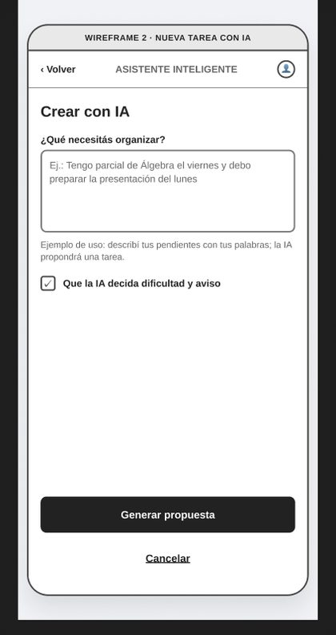
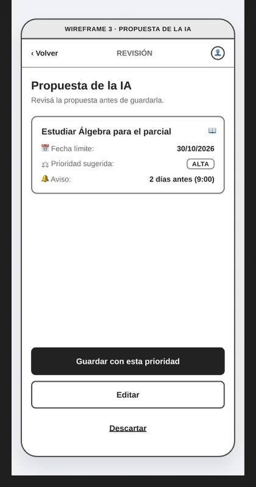
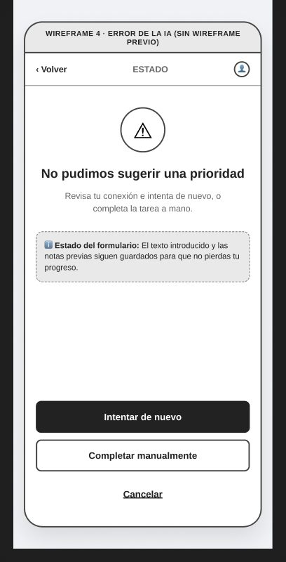
Alta fidelidad
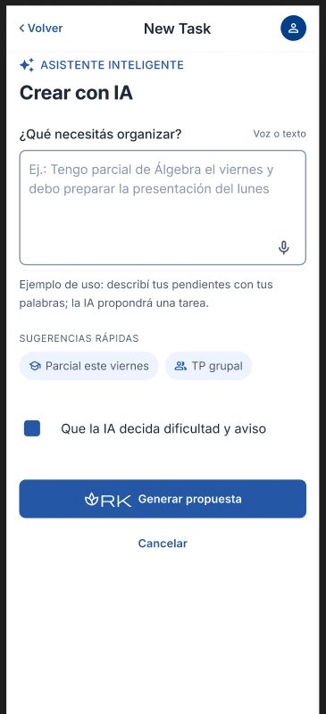
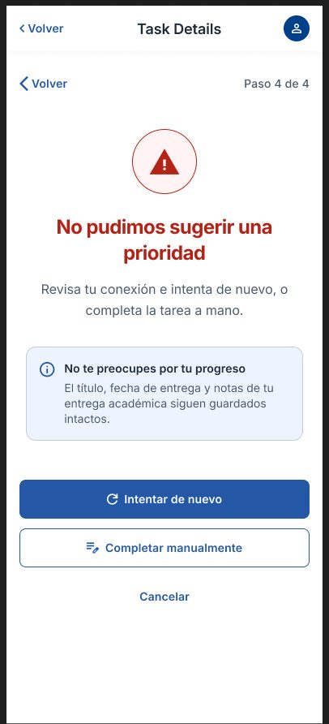
Qué cambió y por qué: la propuesta de la IA se muestra para revisar antes de guardar, y la decisión queda en manos de Mateo. Para cuando la IA falla, se diseñó una pantalla de error que dice qué pasó, aclara que el texto escrito no se pierde y ofrece tres salidas.
Tarea 6 · Corregir la prioridad que sugirió la IA
Wireframe
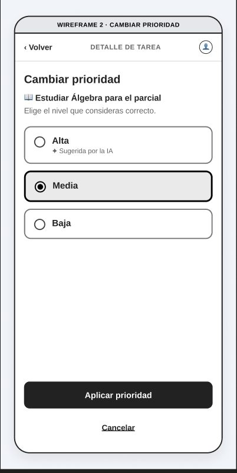
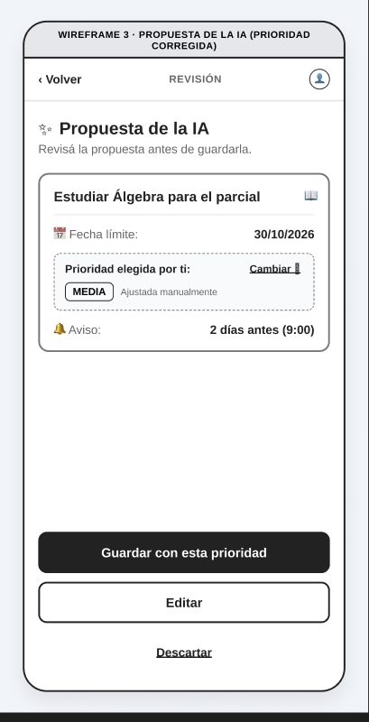
Alta fidelidad
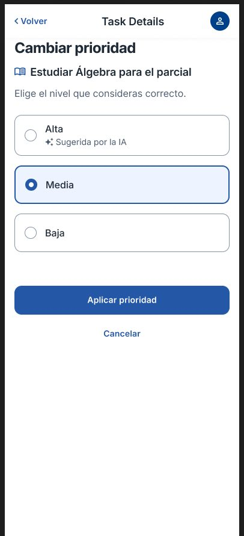
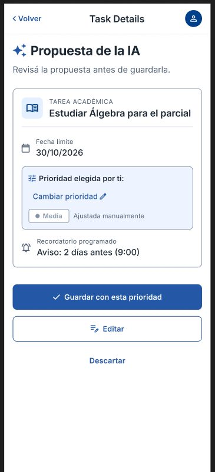
Qué cambió y por qué: esta tarea nació de la prueba con wireframes. Tocar «Editar» en la propuesta llevaba a un formulario vacío y se perdía todo lo que había generado la IA (problema 1, bloqueante). Ahora se corrige solo la prioridad, en su propia pantalla, sin perder el resto. La opción elegida se marca con el control y un borde grueso, no solo con color, y la revisión muestra «Prioridad elegida por ti».
Sistema de diseño
Definimos el sistema antes de generar las pantallas, pensando en Mateo: usa la app entre clases, apurado y cansado. Busca transmitir calma y confianza, con una sola tipografía y un único color para lo que se puede tocar. Los contrastes se midieron contra fondo blanco (WCAG 2.1 AA).
Cuatro tamaños alcanzan para marcar jerarquía. Nada menor a 14.
Espaciado
8, 16, 24 y 32 pt
Poco espacio dentro de un grupo y más entre grupos.
Botones
Primario relleno azul · Secundario con borde · Terciario solo texto · mínimo 48 pt de alto
Un solo primario por pantalla marca la acción principal; 48 pt se toca bien con una mano.
Reglas de uso
1) Un solo botón primario por pantalla. 2) El azul de acción solo en botones y enlaces. 3) Error y éxito siempre con ícono y texto, nunca solo color. 4) Dificultad Fácil/Media/Difícil; prioridad Alta/Media/Baja.
Revisión crítica de la alta fidelidad (a corregir en la demo). Al revisar las pantallas generadas con IA contra el sistema encontramos desvíos que vamos a corregir al programar la demo:
Algunos encabezados quedaron en inglés («New Task», «Task Details», «Edit Task», «Confirm Delete»).
Algunas etiquetas de dificultad y estado usan rellenos de color (naranja, amarillo, verde) que no están en la paleta.
En Nueva tarea, la dificultad todavía aparece como Alta/Media/Baja.
Se mezcla voseo («Revisá») con tuteo («Revisa»).
La barra inferior no es igual en todas las pantallas, y Hoy con «Tarea guardada» todavía usa el botón flotante.
Evaluamos primero por inspección, sin usuarios, para predecir problemas, y después con usuarios reales sobre los wireframes para confirmarlos.
Evaluación por inspección del prototipo en papel
Revisamos los bocetos y el prototipo en papel con los seis principios de diseño de interacción (ver Ideación). El problema más repetido fue la falta de retroalimentación: en ninguno de los tres bocetos quedaba claro qué pasaba al tocar una tarea, y el affordance de las filas era dudoso.
Cambio que produjo: agregamos la confirmación al completar una acción y, en los wireframes, botones explícitos («Ver detalle», «Editar») en cada tarjeta.
Pendiente: agregar el informe de recorrido cognitivo y evaluación heurística que hizo el equipo evaluador sobre nuestro prototipo en papel. Como referencia del método, en los anexos está la evaluación que nuestro equipo hizo al prototipo de otro equipo (PDF), con recorrido cognitivo, heurísticas de cuatro evaluadores y problemas consolidados.
Prueba de usabilidad con los wireframes
Objetivo: confirmar si los problemas de retroalimentación y claridad detectados antes se solucionaron, y encontrar nuevos obstáculos en la creación de tareas (manual y con IA) y en el calendario, antes de pasar a alta fidelidad.
Participantes (3, sin nombres): estudiante universitario de 21 años con alta carga académica; emprendedora de 34 años con múltiples pedidos; joven profesional de 28 años.
Método: tareas dadas como escenarios, pensamiento en voz alta, un facilitador que no ayuda y observadores que anotan.
Resultados por tarea (3 participantes). Satisfacción final promedio: 4,3 de 5.
Tarea (escenario)
Completaron
Tiempo prom.
Errores
Pedidos de ayuda
Facilidad (1–7)
1. Crear con IA · «Tenés un montón de entregas mezcladas en la cabeza y querés que la app te arme una propuesta»
2 de 3
2 min 10 s
3
2
4,0
2. Configurar aviso · «Querés que la app te avise dos días antes de una presentación, a las 9:00»
3 de 3
1 min 30 s
1
0
5,5
3. Revisar calendario · «Querés ver qué tan cargado tenés el miércoles para decidir si aceptás un compromiso»
3 de 3
1 min 15 s
0
0
6,5
4. Marcar completada · «Terminaste de enviar un informe y querés tacharlo de tu lista»
3 de 3
45 s
2
1
5,0
«Me armó re bien la propuesta pero le quise cambiar la hora y me borró todo.»Participante 1, estudiante, durante la tarea 1
Problemas consolidados, severidad y cambio realizado
N.º
Problema
Pantalla
Partic.
Sev.
Cambio en alta fidelidad
1
«Editar» en la propuesta de la IA lleva a crear la tarea de cero y se pierde lo que generó la IA.
Propuesta de la IA
2 de 3
4
Nueva pantalla «Cambiar prioridad» que corrige solo la prioridad y conserva el resto (tarea 6).
2
El checkbox para completar una tarea es muy chico; tocan el texto y no pasa nada.
Hoy / Calendario
3 de 3
3
«Marcar como hecha» como botón principal en el Detalle y en el Aviso. En la demo: que toda la fila marque la tarea.
3
En «Aviso a elección», el selector no parece tocable; se confunde con texto.
Aviso
2 de 3
3
«A elección» como fila con borde y flecha, igual que las otras opciones.
4
Al marcar una tarea, la barra de progreso cambia pero no se nota si se mira abajo.
Hoy
1 de 3
2
Mensaje de éxito arriba, con ícono y texto, y porcentaje visible junto a la barra.
5
El botón flotante «+ Añadir tarea» tapa la última tarea de la lista.
Hoy
1 de 3
2
En Hoy, el botón pasó a estar debajo de la lista, a lo ancho. En la demo: aplicarlo también a Hoy con «Tarea guardada».
Comparación con la evaluación anterior: la prueba confirmó lo que la inspección había predicho (falta de retroalimentación y affordance al interactuar con las tarjetas) y validó el orden por urgencia: el calendario fue la tarea más fluida. El problema más grave, la edición de la propuesta de la IA, fue nuevo: no se podía ver en papel.
Comprobar si Mateo puede completar las tareas principales en la demo sin ayuda, y verificar que se resolvieron los problemas 1 a 3 de la prueba con wireframes, especialmente la corrección de la prioridad sugerida por la IA.
Participantes
5 personas del perfil de Mateo: estudiantes universitarios de 18 a 25 años que combinan cursada con otras responsabilidades (trabajo, tareas del hogar o familia). Al menos 1 que hoy organice todo «de memoria». No pueden ser compañeros del curso ni personas de pruebas anteriores.
Cómo los conseguimos
Invitación a estudiantes de otras carreras de la FIUNI y de otras facultades cercanas, por grupos de WhatsApp y contactos personales, con un breve filtro previo (edad, carrera, si trabaja, cómo organiza sus tareas).
Lugar y duración
Presencial, en la facultad, con la demo en un celular. 20 a 25 minutos por sesión.
Roles
Un facilitador (lee el guion, entrega los escenarios, no ayuda) y uno o dos observadores (anotan sin hablar).
Consentimiento
Consentimiento informado al inicio: qué se registra, que se puede parar en cualquier momento y que en el portafolio no van nombres ni datos personales.
Métricas por tarea
Completitud (autónoma, con asistencia o no completada), tiempo, errores y SEQ (facilidad del 1 al 7). Al final: cuestionario SUS.
Metas
Al menos 4 de 5 completan cada tarea de forma autónoma. SEQ promedio de 5,5 o más. SUS mayor a 68 (promedio de referencia).
Después de la prueba
Problemas unificados con cantidad de participantes y severidad (1 cosmético, 2 menor, 3 mayor, 4 bloqueante). Se corrigen en la demo los de severidad 3 y 4, con antes y después.
Tareas como escenarios (las mismas para todos)
Anotar una tarea: «El profesor de Física acaba de pedir un informe para el viernes y es bastante pesado. Querés anotarlo para no olvidarte.»
Qué hacer primero: «Llegaste a la facultad y tenés una hora libre. Querés saber qué te conviene adelantar hoy.»
Recibir un aviso: «Querés que la app te recuerde el informe el día antes, a la mañana.»
Cambiar una tarea: «El profesor movió la fecha del parcial al lunes que viene. Actualizalo en la app.»
Registrar con tus palabras: «Tenés varias cosas en la cabeza: un parcial de Álgebra el viernes y una presentación el lunes. Contáselo a la app como se lo dirías a un amigo.»
Corregir la prioridad: «La app le puso a una tarea una prioridad que no te parece correcta. Dejala como vos creés.»